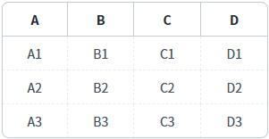
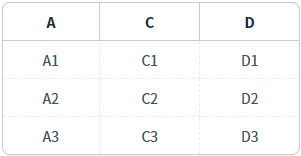
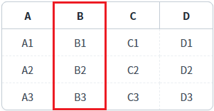

GridView의 'setColumnVisible' 메소드를 사용하여 특정 열의 숨김 여부을 설정하는 예제입니다.
스크립트로 컬럼의 숨김 여부 설정하기
예제 영역 '스크립트로 컬럼의 숨김 여부 설정하기'에 구성된 GridView에서 테스트합니다.1
STEP 1: 초기 상태 확인하기
GridView의 컬럼이 'A', 'B', 'C', 'D' 순으로 보여집니다.
Image 1.브라우저(Chrome) 실행 예시

2
STEP 2: 특정 열을 숨김 설정하기
"'성명' 컬럼 숨기기" 버튼을 클릭합니다.
3
STEP 3: 실행 결과를 확인합니다.
'B' 컬럼이 숨겨지고 'A', 'C', 'D' 순으로 컬럼이 보여집니다.
Image 2.브라우저(Chrome) 실행 예시

4
STEP 4: 특정 열을 표시하기
"'성명' 컬럼 보이기" 버튼을 클릭합니다.
5
STEP 5: 실행 결과를 확인합니다.
'B' 컬럼이 표시됩니다.
GridView의 컬럼이 'A', 'B', 'C', 'D' 순으로 보여집니다.
Image 3.브라우저(Chrome) 실행 예시

1
스크립트를 작성합니다.
GridView의 'setColumnVisible' 메소드를 사용합니다.
Example 1.Script
//예제 파일의 스크립트 "scwin.btn_ex1_1_onclick", "scwin.btn_ex1_2_onclick"을 참고바랍니다. //GridView 'grd_exam1'의 'B' 컬럼 숨기기 grd_exam1.setColumnVisible("col_b", false); //GridView 'grd_exam1'의 'B' 컬럼 보이기 grd_exam1.setColumnVisible("col_b", true);
setColumnVisible( colIndex , colVisibleFlag )
getColumnVisible( colIndex )